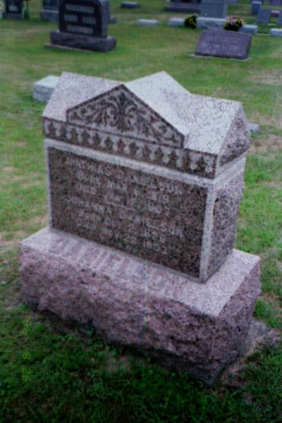

Ancestory

MATHIAS DANIELSON
Born: Vemundvik, Norway // March 19, 1820
Emigrated: On the vessel NEW BRUNSWICK from Namsos to Quebec City // Left on May 12, 1870 and arrived on July 28
Died: Black River Falls, Wisconsin // January 12, 1907
Buried: Little Norway Lutheran Church, Black River Falls, Wisconsin
JOHANNA OTTESDATTER ERICKSON DANIELSON
Born: Vemundvik, Norway // October 30, 1828
Emigrated: On the vessel NEW BRUNSWICK from Namsos to Quebec City // Left on May 12, 1870 and arrived on July 28
Died: Black River Falls, Wisconsin // November 22, 1903
Buried: Little Norway Lutheran Church, Black River Falls, Wisconsin
GJERTA (MARGRETE) MATHIASDATTER STEE
Born: Vemundvik, Norway // March 21, 1850
Emigrated: On the vessel NEW BRUNSWICK from Namsos to Quebec City // Left on May 12, 1870 and arrived on July 28
Married: Halvor A. Stee // November 6, 1873
Died: Clermont, Iowa // 1925
Buried: Gods Acres Cemetery, Clermont, Iowa
DITLEV (DAN) MATHIASSEN DANIELSON
Born: Vemundvik, Norway // May 19, 1852
Emigrated: On the vessel NEW BRUNSWICK from Namsos to Quebec City // Left on May 12, 1870 and arrived on July 28
Married: Lina
Died: Black River Falls, Wisconsin // October 22, 1938
Buried: Little Norway Lutheran Church, Black River Falls, Wisconsin
KAREN MATHIASDATTER SOGGE
Born: Vemundvik, Norway // January 1, 1857
Emigrated: With her grandparents, Otto and Juliana Erickson, and their family // 1866
Married: Nils Sogge // April 18, 1872 in Jackson County, Minnesota (more information about him is on the Sogge page)
Died: Jackson, Minnesota // November 15, 1894
Buried: Hauges Cemetery, Jackson County, Minnesota
CARL MATHIASSEN DANIELSON
Born: Vemundvik, Norway // November 28, 1861
Emigrated: On the vessel NEW BRUNSWICK from Namsos to Quebec City // Left on May 12, 1870 and arrived on July 28
Married: Ida
Died: Black River Falls, Wisconsin // March 26, 1937
Buried: Little Norway Lutheran Church, Black River Falls, Wisconsin
ELLEN MATHIASDATTER PETERSON
Born: Vemundvik, Norway // April 22, 1864
Emigrated: On the vessel NEW BRUNSWICK from Namsos to Quebec City // Left on May 12, 1870 and arrived on July 28
Married: Ole H. Peterson // July 4, 1890
Died: Black River Falls, Wisconsin February 22, 1934
Buried: Little Norway Lutheran Church, Black River Falls, Wisconsin
CHRISTIAN MATHIASSEN DANIELSON
Born: Vemundvik, Norway // November 6, 1854
Emigrated: On the vessel NEW BRUNSWICK from Namsos to Quebec City // Left on May 12, 1870 and arrived on July 28
Died: Unknown (maybe in Louisiana)
Buried: Unknown
OTTO MATHIASSEN DANIELSON
Born: Vemundvik, Norway // June 9, 1859
Emigrated: On the vessel NEW BRUNSWICK from Namsos to Quebec City // Left on May 12, 1870 and arrived on July 28
Died: January 6, 1877
Buried: May be buried on the homestead in Jackson County, Minnesota
JULIANE MATHIASDATTER DANIELSON
Born: Vemundvik, Norway // November 9, 1866
No other information is currently known; she may have died during emigration
JOHANNES MATHIASDATTER DANIELSON
Born: Vemundvik, Norway // June 21, 1869
No other information is currently known; she may have died during emigration